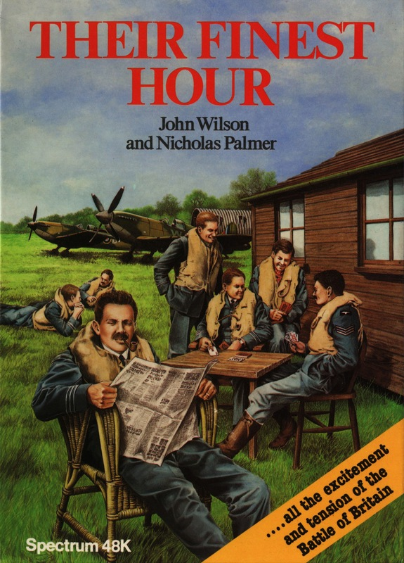
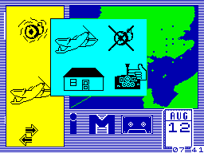

Their Finest Hour


{kind=link}

| Publisher: | Century Communications |
| Price: | £9.95 |
| Year: | 1985 |
| Source: | CRASH, Issue 26 |

In the wake of PSS’s highly acclaimed Battle of Britain, Century Communications, better known for their series of computer handbooks, have published an icon driven simulation of this famous conflict. The game was programmed Fourth Protocol style by John Wilson, but designed by veteran board wargamer, Nicholas Palmer, author of the definitive The Comprehensive Guide to Board Wargaming. The result is the most fascinating computer wargame yet to appear on the Spectrum.
It’s hard, in fact, to know exactly where to start praising the game as it excels in so many areas. The packaging is medium format ‘bookcase’ style, containing a cassette and instruction leaflet. ‘Leaflet’ really fails to do justice to the excellent rules slip. From a potted history of events that led up to the battle, you are taken systematically through the different rules and given guidelines on play at each stage. Diagrammatic summaries of the icons used in the game make the straightforward play techniques even easier to grasp for the beginner. Finally, a section of notes from Nicholas Palmer explains the philosophy of game design used.

allow interceptor forces to be prepared
with the utmost efficiency. Use the pointing
finger to select between options
On the other side of this ‘leaflet’ is a map of the southeast of the UK and part of occupied France. The map shows airbases, anti-aircraft installations, radar stations and ports, as well as major cities the Luftwaffe might attack. This supplements the map presented on the screen during play.
The game has a pulse rate feature used to set the speed of the game. The rate can be varied between 1 and 255, meaning the game can be finely tuned to individual taste: it can be set up to suit a wide range of tastes from those of the player who likes to analyse a game in fine detail as if it were a solitaire board game to the player who wishes to test personal reactions and ability to make fast crucial decisions. The clock can be paused for necessary breaks in play when the game doesn’t need to be saved, or temporarily speeded up during certain times of relative inactivity. Once the pulse rate has been set it remains the same for the greater part of play.
As with its obvious competitor, Battle of Britain, Their Finest Hour allows the player to select single day or campaign scenarios. The single day option is perhaps the best start point for the beginner. Once the instructions and nature of play have been thoroughly digested, the player can progress to the full campaign and decide how best to set the pace of the battle. In the one day scenario, victory is assessed at nightfall when the attacks have ceased. In the campaign game, at the end of each day’s fighting you are summoned to Winston Churchill’s command bunker where he assesses your progress. It is possible (though very difficult) to deal a crippling blow to the Luftwaffe during a single day, in which case victory will be yours. If you have managed the forces particularly badly, Churchill asks for your resignation. Otherwise, he merely assesses your progress so far, and play continues the next day. You may decide to quit at any point during the campaign game, and victory is given to whichever side has performed best.
Intelligence reports are crucial for planning the initial defence. The type and number of aircraft available to the enemy are detailed at the start of the game, and although the numbers may differ each time the game is played, subsequent RAF losses are always measured against this first intelligence report. The Luftwaffe has ME109 fighters, ME110 fighter bombers, HE111 and JU88 heavy bombers and the medium DO17 and JU87 bombers at its disposal. British air defence is made up entirely of squadrons of Spitfires and Hurricanes. The author acknowledges that Beauforts, Defiants and the like also had a small part to play, but for the purposes of the game he chooses to ignore them. This has no detrimental effect on the game as a simulation.
Whilst monitoring incoming enemy attacks the player has the option of setting the level of flak, and can order different levels of alert for pilots. Alerts can be made locally or set to bring an entire region’s interceptor force into action. Seriously fatigued pilots may be sent to Scotland for rest while new pilots are brought in. More experienced pilots are worth treating as well as possible under the circumstances, as they have the greatest effect on the enemy when in battle. Repairs may be carried out on those airfields which have suffered an enemy attack. If these repairs are intensive, they return an airfield to operative status quickly, but during the day that repairs are being carried out the field is vulnerable to attack.
When a German airborne unit is successfully intercepted, the player is asked to supply an aggression factor. Minimal aggression causes the RAF pilots to break off the attack before casualties are suffered, whereas a high aggression factor results in relatively high losses on both sides. If an enemy squadron consists entirely of fighter aircraft, it’s best to save your pilots and break off the attack. If it’s mainly a bomber formation, then the opportunity to damage it as severely as possible should be taken. Germans gain victory points with successful raids on ports and cities. Successful Luftwaffe strikes against radar bases eventually result in severe blind spots occurring in the defensive network, which can lead to your downfall.
Forces may also be moved to respond to differing strategies from the Germans. On some occasions, the Luftwaffe might make sporadic, small attacks on varying targets; alternatively they may try to smash your opposition in one fell swoop. The variety of strategies that may be employed by the computer make this one of the most compelling games I’ve ever come across. Having now played the game several times, I have not yet been able to anticipate more than the simplest of actions on the enemy’s part.
The way in which the icons are used is very neat. All the possible actions are clearly set out before you. Pressing the wrong key doesn’t always lead to a major mistake — you can usually get out of it without any particular problem. Sometimes a message appears such as, ‘Already in flight, Sir!’ if you try to scramble an airborne unit. Full combat results appear in messages which list the numbers of each type of aircraft lost by each side in a particular engagement.
The game lacks the optional arcade element present in Battle of Britain and is inferior in one or two aesthetic points (such as the way the radar screen could be scanned in the PSS game) but instead the player has a brilliantly implemented simulation which does full justice to the historic events it represents. The talents of John Wilson and Nicholas Palmer have been used to the greatest effect. To my mind, the combination of their abilities has resulted in the finest wargame currently available to Spectrum owners.
Presentation 88%
Beautifully effective — and useful too!
Rules 94%
Excellently devised and explained
Playability 92%
Icon driven commands take very little getting used to
Graphics 94%
More in the way they are used than in technical complexity, they are excellent. Even the loading screen has an amazingly executed picture of Winston Churchill
Authenticity 96%
Once a good pulse rate is set and the campaign game is played, the qualities of the game as a simulation really stand out
Value for money 95%
Compared to others of this ilk, very well priced
Overall 96%
Sheer brilliance